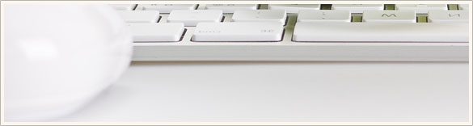

About me
Saya adalah seorang desainer produk digital yang bersemangat menciptakan pengalaman pengguna yang intuitif dan menyenangkan. Dengan latar belakang di bidang desain grafis dan minat yang mendalam pada game, saya menggabungkan estetika visual yang menarik dengan fungsionalitas yang kuat untuk menghasilkan produk digital yang inovatif. Portofolio ini menampilkan berbagai proyek yang telah saya kerjakan, mulai dari desain aplikasi mobile hingga website interaktif. Setiap proyek adalah hasil dari kolaborasi yang erat dengan tim dan klien, dengan tujuan akhir untuk menciptakan produk yang tidak hanya indah, tetapi juga bermanfaat bagi pengguna.
March 16, 2010 | Posted by Owner | Filed under templates, internet 